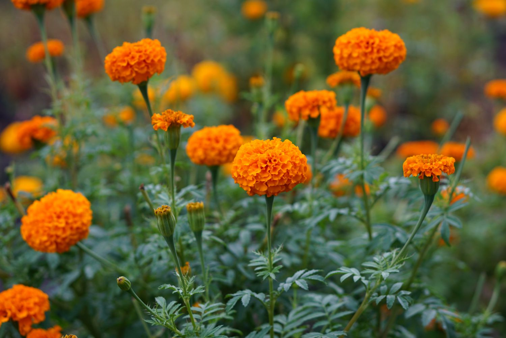
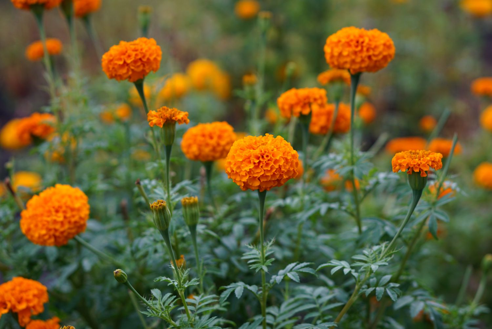
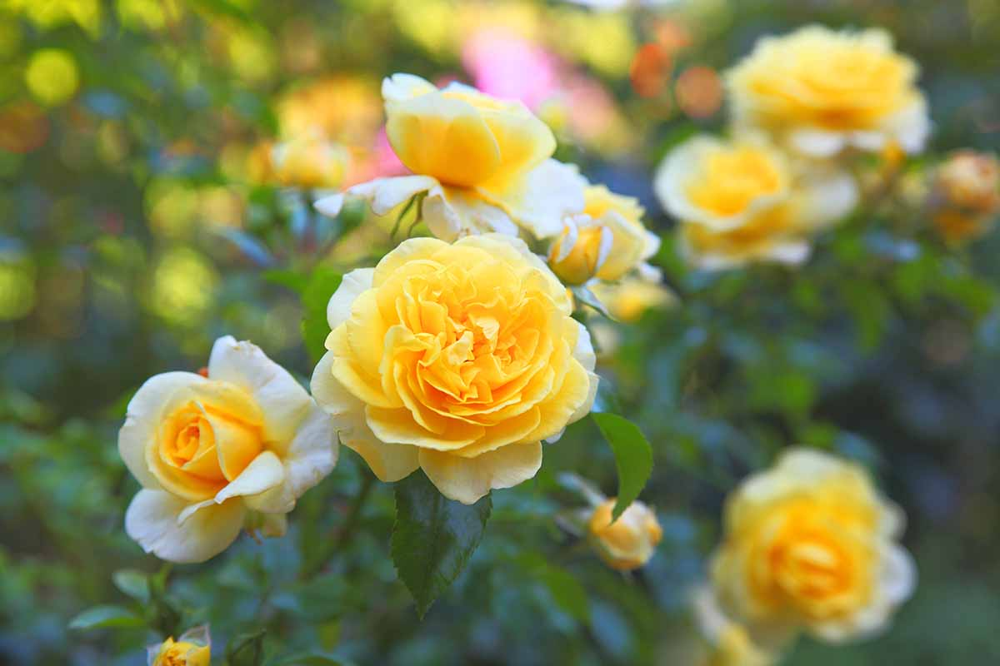
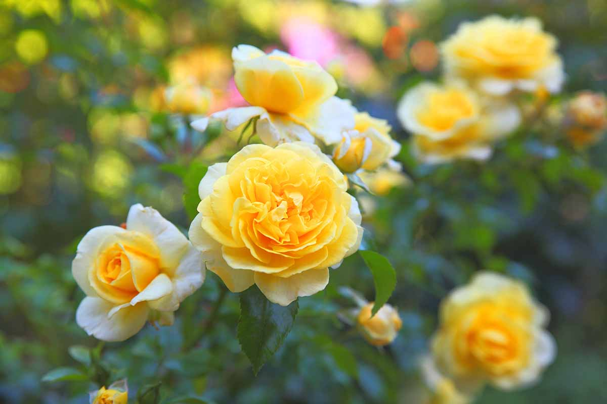
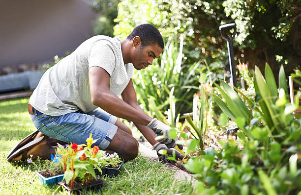
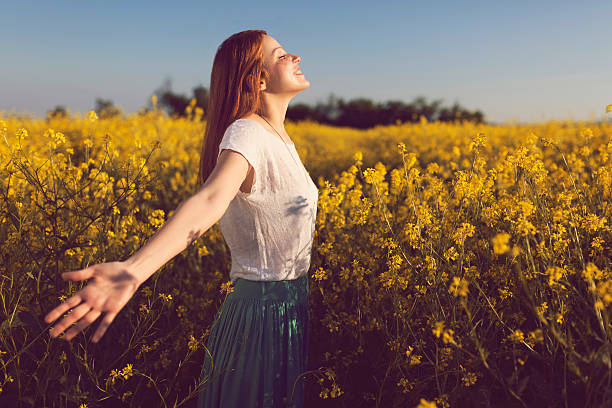
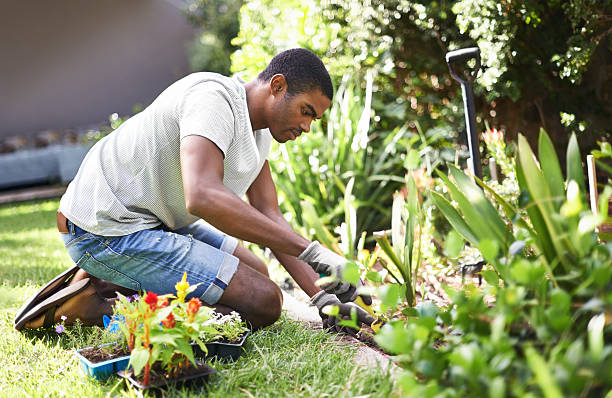
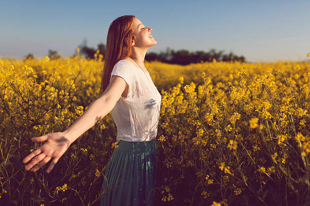

Blossoming Flowers
For most plants, flowers attract pollinators to make seeds, helping plants to reproduce and
form the next generation. Flowers also play important roles in ecosystems. Floral nectar, pollen and
even petals are an important food source for a huge range of animals, from bees and beetles to birds and
bats.
Their primary purpose is reproduction. During the reproductive process, flowers make use of their
colorful petals to attract pollinators such as insects and animals. These creatures are also lured by
the nectar that flowers produce in their nectaries, glands that are often found at the base of their
petals.Flowers are a vital part of the world's eco-system and are the basis of all life on earth. Not
only do they produce oxygen for us to breathe, but they also provide food for birds, insects and animals
on every continent.
Gallery
 

 



Information
Hibiscus is a genus of flowering plants in the mallow family, Malvaceae. The genus is quite large, comprising several hundred species that are native to warm temperate, subtropical and tropical regions throughout the world. Member species are renowned for their large, showy flowers and those species are commonly known simply as "hibiscus", or less widely known as rose mallow.
The Aquatic flower blooming most beautifully from the deepest and thick mud. It is a perennially blooming flower with striking symmetry and colours. But, this delicate beauty is much more than just a flower. It is a flower of spirituality and meaning as old as time.Unlike the other flowering plants, the Lotus life cycle is different.
Mogra is a type of jasmine flower commonly used in India for religious and cultural ceremonies and to make perfumes and garlands. Mogra is also the name of a village in the Solapur district of Maharashtra, India. Mogra can also refer to Mogra, a type of headgear worn by women in some cultures, especially in India.
Sunflower, (genus Helianthus), genus of nearly 70 species of herbaceous plants of the aster family (Asteraceae). Sunflowers are native primarily to North and South America, and some species are cultivated as ornamentals for their spectacular size and flower heads and for their edible seeds. The Jerusalem artichoke (Helianthus tuberosus) is cultivated for its edible underground tubers
Combretum indicum, commonly known as the Rangoon creeper or Burma creeper, is a vine with red flower clusters which is native to tropical Asia and grows in thickets, primary and secondary forest, and along river banks in the Indian subcontinent, Malaysia and the Philippines. It has since been cultivated .
It goes by the name of Tuberose in English. The common name derives from the Latin tuberosa, meaning swollen or tuberous in reference to its root system. They are valued highly by aesthetes for their beauty and fragrance.Rajnigandha (Polianthes tuberosa) is one of such plant which is well known for its uses in bouquets.
Importance Of Flower In Our Life:
Many flowers are possible to eat, and they have fed and sweetened many generations. The flowers form an integral part of many foods, such as salads and soaps, and are also used in jellies, jams, wine, and even tea production. Some flowers are toxic to humans, but marjoram, water lily, hyacinth, gamma, safflower, sage, mustard, etc. It is safe to consume.
The presence of vibrant and playful flowers can cause happy emotions and instantly affect our mood. Hence, flowers are given when a loved one is sick. Yes, scientific research suggests that having flowers and plants around the hospital can help the patient recover naturally by reducing stress levels and anxiety.
Valentine’s Day, Mother’s Day, Wedding, Bridal Shower, Baby Shower, Birthday, or Other Anniversaries? Or have you been promoted, connected with old friends, and enjoyed a quiet and unforgettable moment with loved ones? Flower Bouquets can turn everyday moments and events into something special. You can add more life and beauty to your event with a good collection of fresh roses and preserved rose arrangements. Browse the collection and choose the best flower arrangement for your special day.
The importance of flowers in our everyday life is to help convey the best of our feelings and emotions towards someone in a way that no other object can. If words are not enough, the flower can speak your heart bigger and strengthen your bond with the person you love. No matter your feelings, flowers help you express your feelings perfectly.
Flowers have multiple commercial uses. From using perfumes as star accents to becoming the centre of decorations, many people profit from them commercially. We have essential oils for body care, such as essential oils, creams, and serums. The food industry also uses them to extract flavors and organic food colourants. Some restaurants also use them to improve creative food fusion.

 



Relationship Between Humans and Flowers:

The relationship between humans and flowers is special. Humans have always been strangely
attracted to flowers even when they provide no physical sustenance and when resources are low. Humans
have also put embodied and physical effort into growing flowers for their aesthetic qualities. Stone
drawings of flowers were found in ancient Egyptian graves 120,000 years ago, were celebrated in
festivals in Roman times, and, in China, were created in silk 2000 years ago.
As stated, this attraction is not on a survival level, as while flowers can provide some basic medicinal
uses and serve as a sign of the fertility of the land, the main motivation for growing flowers seems to
be aesthetic. However, this goes beyond perceptual levels, as flowers are a multi-sensory experience
that includes smell, texture, and color (and an embodied experience, in that one has to actively search
for flowers with his/her body, to tend them, and to bend over them to smell them). The experience is
also relational in that flowers are dependent on man’s care; they have to be handled gently, watered,
and nurtured. On all of these levels, the human interaction and the relationship with flowers seems to
be an interesting example of embodied aesthetics. This perspective of the relationship between humans
and flowers, and thus the incentive to grow them, is not well explored in the literature.
Indeed, embodied phenomenology assumes that our live bodies interacting with the environment are at the
basis of our phenomenological experience of the world. Flowers are an apt example of being aware of the
environment around us and of how we engage with the world through skilled interaction through our
bodies—by using all of our senses. This happens through moving our bodies within space rather than only
by contemplating the environment. Flowers, as described above, demand us to get close to smell them, to
move towards them to find them in nature, to water them, to pick them, and to carry them in our
All of this embodied interaction makes them excellent examples and receptors for the experience of
embodied aesthetics. Tending to and enjoying flowers thus enables us to interact in a skilled fashion
with the environment and to engage with the world. This behavior clearly creates positive emotions, as
there is no survival-level incentive to engage with flowers. An exploration of this basic relationship
to flowers may help us to understand how embodied aesthetics ‘works’ to enhance positive emotions in an
ancient and enduring context of growing flowers.
As stated, aesthetic and embodied experiences include within them overt perceptual processes, but also,
additional components that will be outlined below. Firstly, from an evolutionary perspective, the flower
as a species uses, among others, the strategy of activating humans to grow and to propagate it, just as
it activates insects with pollen. The plant thus uses its aesthetic characteristics to attract humans.
In turn, for humans, flowers may evoke positive emotions, because they can help predict food-growing
possibilities and/or may be used as medicines. They essentially show where man can live healthily. In
addition, colors of flowers may be helpful in finding ripe fruit against a green background. However, as
stated above, when man grows ornamental flowers, this evolutionary motivation is lessened. People have
always actively invested resources in growing ornamental flowers since ancient times.
More Context
Daisy
Daisies are simple. They symbolize youth, purity, innocence, and loyal love. Include these happy flowers in a mixed bouquet for someone you're in a new relationship with or for a longtime ride-or-die friend.
Daffodil
If someone's always on your mind, you should send them daffodils. The sunny blooms represent unequalled love and send messages like, "You're the only one" and "The sun is always shining when I'm with you."
Camellia
This sweet-smelling flower represents self-reflection and inner strength. Give them to a friend who's fresh off a breakup or to someone you love on their birthday to encourage a year of personal growth ahead.
Dahlia
Today, dahlias symbolize beauty, commitment, and kindness. They're also tied to steadfastness and resilience due to their long growing season. They continue to bloom long after many summer flowers have died.
About Us
Welcome to Flower Lovers Website , your go-to haven for all things floral. We’re passionate about bringing together flower enthusiasts from every corner of the globe to celebrate the artistry and beauty of blooms. Our site offers a rich array of resources, from expert tips on flower care and gardening to stunning photo galleries and engaging community forums. Whether you’re seeking inspiration for your garden, advice on floral arrangements, or simply want to connect with fellow flower lovers, Flower Lovers Website is here to nurture your passion and help you explore the enchanting world of flowers.the ultimate destination for anyone who finds joy and inspiration in the world of flowers. Our site is a vibrant community where flower enthusiasts from all walks of life can explore and share their passion for blooms. We offer a wealth of resources, including expert tips on flower care and gardening, beautiful photo galleries showcasing stunning arrangements, and engaging forums where members can connect, exchange ideas, and seek advice. Whether you're an avid gardener, a budding florist, or simply someone who admires the beauty of flowers, Flower Lovers Website is here to foster your love for nature’s most delicate creations and help you discover the endless possibilities of floral artistry.